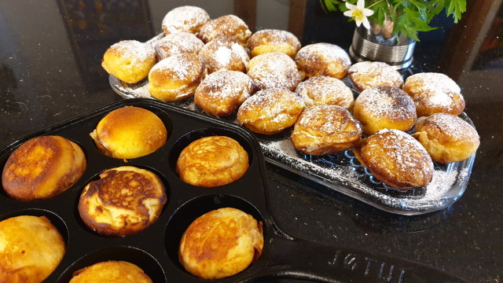

Munker
Tradisjonelt norsk/dansk bakverk. Små runde boller med salt og sprø skorpe. Oppskriften gir ca. 50 små munker
Ingredients
- 3 egg
- 2.5 dl sukker
- 5.5 dl mel
- 4 ts bakepulver
- 2.5 dl kefir
- 200g smør til steking
Directions
- Rør sammen alle ingrediensene.
- Smelt noen spiseskjeer smør i en skål.
- Forvarm munkejernet til middels varme.
- Smør alle gropene i jernet og hell i røre. Røren skal ligge litt under kanten av gropen.
- Snu dem første gang når de har blitt lysbrune under.
- Øs jevnlig over mer smør. Gropene skal ikke være tørre.
- Fortsett å snu munkene til de er godt stekt på alle kanter.
- Gjenta fra steg 4 frem til røren er brukt opp.
Notes
Opprinnelig oppskrift fra Norsk Tradisjonsmat